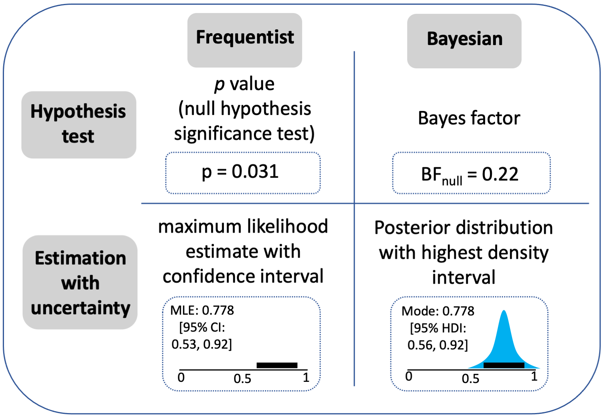
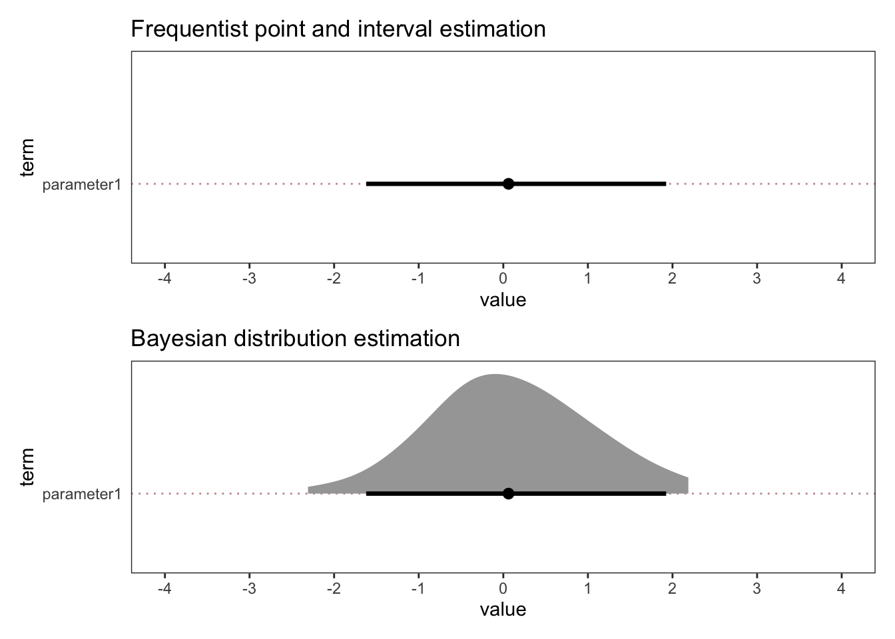
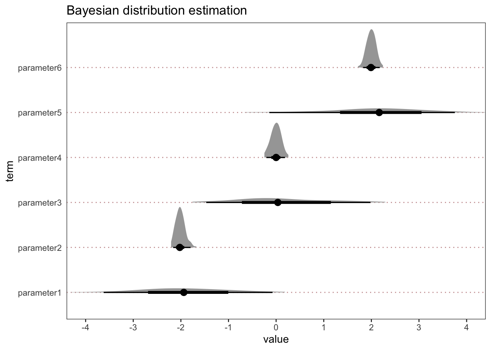
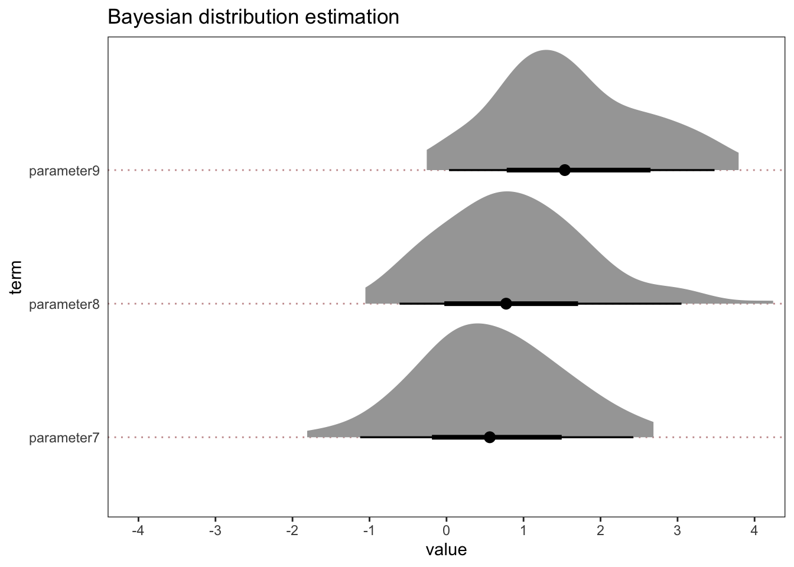
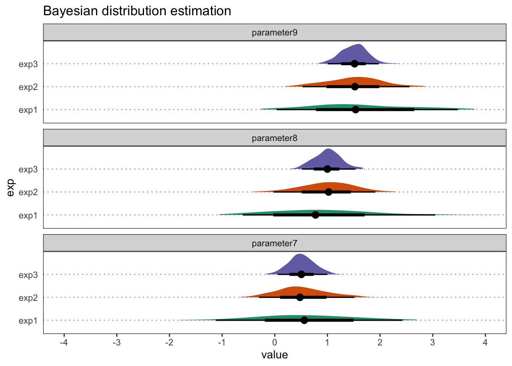
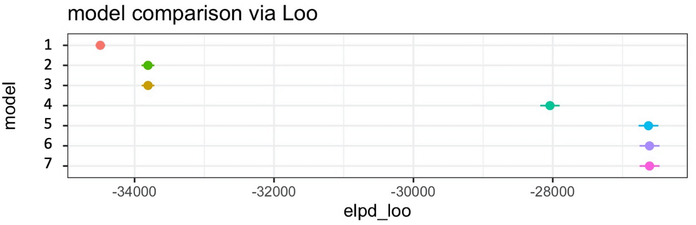

![]()

tl:dr
Pre-register predictions and specific analyses in advance
Put p values and Bayes factors in the bin
Estimate parameters within (multi-level) regression models
Describe the posterior distribution of these parameters
Evaluate these posterior distributions in relation to your hypotheses
Disclaimer
I am not a statistician and I am not saying anything new here. I’m just summarising a bunch of other people’s suggestions.
If I have confused things, then that’s a shame. Such is life. Please send me a postcard from your next holiday with constructive feedback.
Finally, I outline one general approach to data analysis here. I have found it really refreshing compared to my past experiences and therefore I want to blog about it. But I am aware that there are many valid ways to analyse the same dataset, rather than there being one correct way. So take any suggestions below in that spirit.
Objective
I want to outline my lab’s recent approach to data analysis because others may find it helpful. It is a relatively high-level overview, rather than a step-by-step tutorial.
Intended audience
Newbies who are looking to move towards using multi-level regression models in a Bayesian workflow. It is not going to be newsworthy for those who already have experience with estimation approaches in multi-level regression.
My background
My background and training is in experimental psychology and cognitive neuroscience and my main research methods and statistics training will be very familiar to those from a psychology background. Each week we learned about a different statistical “test”. And each week we were given some data, which was suitable for a particular test. Week 1 starts with a t-test and you head towards more complex ANOVAs as the weeks move on. Although there are promising exceptions, a version of this type of training still seems to be the cornerstone of most undergraduate and graduate statistics courses in psychology world-over.
All you ever needed to do was pick the right test for the particular type of data and pray to the datagods that the p value would be < 0.05. If p was < 0.05, then pop the Champagne and praise Jesus. If p was > 0.05, but still close (e.g., < 0.1), then say something vague like “trending towards significance”. If p value was > 0.1 then just pretend that that means there is no real effect.
I became tired of this and I was looking for something different. And I had a sabbatical.
Enter Richard McElreath’s book…
Main inspiration
Richard McElreath’s textbook and Solomon Kurz’s ebook.
What comes below takes its primary inspiration from these resources. I should say that I am only presenting a small slice of what these books have to offer. And it may not be the most clear or coherent slice. So please read these books yourself for maximal benefit.
Two other noteworthy texts are as follows:
John Krushke’s Doing Bayesian Data Analysis textbook
Bodo Winter’s Statistics for Linguists textbook
Taking an estimation approach
Krushke and Liddel (2018) draw two key distinctions, which are depicted in the following figure:
They distinguish between hypothesis tests (top row) and Estimation with uncertainty (bottom row). They also distinguish between a frequentist approach (left column) and Bayesian approaches (right column).
Two things are immediately striking about this. First, Bayes factors are not required to run Bayesian analyses. Indeed, Richard McElreath’s entire textbook on Bayesian statistics does not involve Bayes factors (or p values, but that might have been expected). Second, taking an estimation approach is not tied to being a Bayesian. It can also be done in a frequentist framework1.
Why do I find it appealing?
Well, first of all, you can forget about the difficulties of interpreting the pesky p value or trying to benchmark Bayes factors. Both approaches may be perfectly fine to use (if used appropriately, c.f. Wasserstein & Lazar, 2016; Lakens, 2021), but you just don’t need them under the estimation approach. Based on my stats background, that was a huge benefit because there was always something deeply unsatisfying about interpreting artificial bright marks (e.g., p < 0.05) or using pre-set benchmarks for how to interpret Bayes factors (e.g., these scales). Both of these approaches seemed to rely too heavily on categorical thinking (significant or not) or some framework for interpreting Bayes factors. All of which felt too certain and/or too artificial for my liking.
Instead, the estimation approach is built around estimating the magnitude and uncertainty of parameters. I instinctively found this more satisfying. It seemed a simpler starting point to summarise the distribution of a parameter (e.g., give lower and upper bounds, as well as the peak density or some other summary value) without inherently giving special status or bright lines to certain values.
What does estimation with uncertanty look like?
Some examples may help here. Below you can see what estimation with uncertainty might look like in frequentist and Bayesian workflows.

For illustration purposes, this is just simulated normal distribution data. And we pretend that there is just one parameter in the model (parameter1). Let’s say parameter1 reflects the difference in points on a scale between two conditions (A and B).
As you can see, the point estimate is very close to zero and the interval estimates (which are 95% confidence / quantile intervals) extend from -2 to 2. As such, the best estimate for the difference between A and B is zero, with reasonable values ranging from -2 to 2.
Sidenote: The benefit of Bayesian workflows - working in distributions
Although estimation with uncertainty can be done in frequentist or Bayesian workflows, there is an important difference between the two parameter estimates above. The Bayesian one has a density plot and the frequentist one does not. This is important because it is crucial for thinking about the inferences that you can draw.
Even though most researchers (especially in psychology and human neuroscience) will be more familiar with frequentist thinking than Bayesian thinking, it turns out that understanding p values is not that straightforward (Wasserstein & Lazar, 2016). And somewhat counterintuitively, it is more straightforward to understand the Bayesian estimation parameter that I presented above than the frequentist version (Krushke & Liddel, 2018). Try this on for size:
The frequentist interpretation:
If I repeat this study precisely an infinite number of times, and I calculate a 95% interval each time, then 95% of those intervals will contain the true parameter.
The Bayesian interpretation:
There is a 95% probability the parameter falls in this interval.
It seems the latter interpretation is the one that most folks using a frequentist framework tend to think they are making and definitely want to be making when in fact they are not. And that all stems from the fact that the Bayesian workflow is building a density distribution for each parameter in the model. Once you have the posterior distribution, you can just summarise it in a more straightforward manner using tools from descriptive statistics to summarise the shape and extent of the distribution.
In contrast, the frequentist interval is a flat line, such that all you can say is that 95% of an infinite number of 95% intervals will contain the true parameter. But that parameter could be anywhere along the flat line. It is no more likely to be in the middle as at the edge of the line. A density distribution is different, by definition, because it has a particular shape which, for example, may have the highest density in the middle of the distribution. This means values in the middle are more likely than at the edge, as a function of the shape of the distribution. It is just a density distribution after all.
It is the structure of the model that matters, not the p value or Bayes factor
Ok, sidenote over. Back to the main thread.
The main emphasis in an estimation approach is different to traditional statistical thinking or commonly used approaches. At least as outlined by Richard McElreath and others, it is motivated by building multi-level regression models that try to estimate parameters that reflect reality as much as possible. As such, it is the integrity and structure of the model and the assumptions that the model embodies that take centre stage, rather than the bright lights of a p-value or Bayes factor.
This has many benefits. Instead of learning an almost infinite list of “tests” like your standard undergraduate or postgraduate statistics class, it is a more general and flexible approach that is applicable in many different contexts. You can almost always build a (multi-level) regression model to suit your purposes. This means you can have one general but powerful workflow that can be deployed in a diverse set of contexts, due to the tools freely available.
Build models incrementally towards the full model
There are many ways to go about building models, and much debate. We will sidestep that debate and just outline one approach.
My lab takes the “keep it maximal” approach to model building (Barr et al., 2013). The logic here is to include all the fixed and varying2 effects that the design permits because it tends to be a better reflection of the reality we are trying to model. Read Dale Barr’s paper for more details.
Therefore, we start with an intercepts only model (i.e., one without any predictors) and build incrementally towards the full model. The full model being the one with the maximum number of fixed and varying effects that can be specified by the design.
Implementation: lme4 vs brms (and stan)
We use brms to build the models. We are fans of the tidyverse generally and we love Solomon’s ebook, which translated McElreath’s R and stan code into tidyverse format and brms code. So that’s what we use.
Brms is a high-level front end package for stan. Brms uses the same syntax as lme4 (which is very popular in psychology). And stan is a sophisticated statistical modelling platform.
- Advantages:
- Stan has far fewer failures to converge, even with complex models.
- Stan also has much greater flexibility in model specification.
- Disadvantages:
- Computational power and time. Some Bayesian models can take a long time to run (hours, days, weeks). Only the advent of powerful desktop machines in the last 25 years or so make it even possible to run such models in a widespread manner.
Inference
We use two approaches to make inferences.
1. Evaluate parameters of interest in the full model.
We take the full model and we evaluate parameters from the full model against our pre-registered hypotheses. Our pre-registrations include the exact formula from the full model, as well as explicit hypotheses about the ways in which parameters would support hypotheses or not.
Now some examples. Take a look at some made-up distributions from what could be a full model of interest.

As you can see, these six parameters vary in their highest density (what you might take for a point estimate) and in their spread (or width of interval estimate). Two are centred on -2, two on zero, and two on +2. Three have relatively broad distributions whereas three have relatively narrow distributions.
In each case, you could then describe the proportion of values that span a particular range or quantile interval. e.g., for parameter 3, values as low as -2 and as high as 2 are compatible with your model estimates.
Then consider what this might mean in relation to your pre-registered hypotheses. Let’s say for simplicity, that for all six parameters, we pre-registered that each would need to be positive to support our hypotheses. Parameters 1 and 2 would be in the opposite direction to our predictions and therefore not support our hypotheses and also reflect a sign error (i.e., the direction of effect was the wrong sign in relation to our hypotheses). Parameters 3 and 4 would also not show clear support the hypothesis as they centre on zero, but parameter 5 and 6 would. Parameters 2, 4 and 6 would be narrower estimates and more precise than parameters 1, 3 and 5. Therefore, just based on the width (or precision) of the distribution alone, we may initially be more confident about drawing inferences from parameters 1, 3 and 5 than 2, 4 and 6.
Of course, at this point also, it would be important to evaluate what such values would mean when situated in the particular research context. If we treat these as effect sizes in original units, which they may be depending on the type of model being used, then what would such results mean for theory or practice etc.? If it’s basic research, how does it update or add to understanding of say cognitive or brain networks? If it’s more applied, how does inform treatment interventions or public policy?
Ok, that’s all fine and fairly clear-cut, as far as data from one experiment can take you. But what about grey areas or distributions that are a little more indeterminate in relation to our hypotheses? Take a look at the following.

In these examples, let’s again take zero as an important reference point and assume that we pre-registered a positive effect for all three parameters.
All three have the same spread. And all three have a majority of positive values. However, they vary in the strength with which they would support our hypothesis. Some have a healthy number of negative values in the 95% quantile interval (parameters 7 and 8) and some have a lower bound close to zero (parameters 9). Therefore, none of these provide overwhelming support for our hypothesis, at least not on their own as it stands based on a single study. With that being said, parameter 9 is more compatible with our hypothesis than parameters 7 and 8. That much is clear and obvious.
But, overall, follow-up experiments and more data would be needed. This is true in all cases in my view, but especially in this particular case because of the indeterminate nature of the distributions.
Ok, so let’s go replicate: At this point, I would then run a replication (or more likely, a replication and extension). By doing so, you avoid joining the “Cult of the Isolated Study”, which is the trap of drawing conclusions from single experiments - see here and here.
So let’s look at how some replications may help with our inferences.

Ok, so I’ve made things cartoonishly simple here, just to make the point obvious. But we can see that, in this example, as we add replications, our estimates become more precise. Each replication increases the sample size from N=100 to 300 and then 500. Let’s also say that with each replication, we refine our measure tools to make them more sensitive and add better control conditions. For each parameter, we would now have a much stronger foundation to make an inference. Not only are the parameter estimates more precise (the lower and upper bounds are closer together), but with 3 separate samples collected and at least two pre-registered large-scale replications, we keep finding the same general pattern of results. That feels satisfying and re-assuring, even if they don’t support your hypotheses 100%.
2. Model comparison.
Before we begin this section, an important disclaimer: If I consider myself fairly inexperienced with multi-level regression in general, then I am an absolute stone-cold beginner when it comes to model comparison. So please take this section with big bucket loads of salt. And head to the original sources for confirmation.
Ok, disclaimer over. Back to the main thread.
The second way that we tend to make inferences in our general analytical workflow is through model comparison. Recall earlier that we built models incrementally from the simplest to the most complex model (with the maximum amount of varying effects permitted by the design). That process would naturally result in a number of models being specified. We would then compare all of the models to see how well they can predict new or unseen data.
To make this possible, you remove some portion of the data, which you label as the new, unseen or “out-of-sample” data. You then use the data that remains to try to predict the out-of-sample data that the model has never seen before. In that way, the out-of-sample data can be considered as “new” because the model has never seen it before. You would then compare and contrast how accurately each model can predict the out-of-sample data.
How does it work on a practical level in relation to your hypotheses?
Let’s say there was a crucial parameter (or several parameters) of interest, your inference would be informed by the extent to which out-of-sample prediction is improved by the addition of your parameter/s of interest. When you compare to a model without the key parameter, how much does out-of-sample prediction improve? Not at all? A smigde? There is clear water between models? Depending on the size of the difference between these estimates of accuracy, it would inform how much of a difference the parameter of interest makes to out-of-sample predictive accuracy.
What kind of model comparison do we use?
Model comparison is a big old hairy beast with lots of different variants. We use one particular flavour of model comparison called Leave One Out (LOO) cross-validation (Vehtari et al., 2017). As the name states, it leaves one data point out and uses the rest to predict it. McElreath’s suggestion was to simply plot the point estimates along with the associated standard error of the mean (SEM) and take a look at them. If the SEM intervals overlap, take it as not much evidence for a difference between models. Then if they don’t overlap, take it as suggestive evidence that predictive accuracy improves when you add the particular parameter to the model.
There is no need to “pick a winner”
A further insight from McElreath, which I found particularly refreshing, is that the aim is not to pick a winning model. Instead, the aim would be to comment on accuracy across all of the models. I found this refreshing because I have been at countless scientific talks, lab meetings and other gatherings where it appears the speaker is hell-bent on finding any possible way to justify picking the one single, majestic-looking model that resolves Middle Eastern conflict, whilst simultaneously turning water into wine. I therefore very much appreciated the more descriptive approach that McElreath encouraged.
Let’s put some flesh on the bone with an example…
Let’s say you built 7 models. Model 1 is an intercepts-only model (i.e., a model without any predictors). Subsequent models (i.e., models 2-7) would each add a further parameter. Depending on how you’ve set things up, these additional parameters could be, for example:
- An average effect of factor A compared to B;
- The varying effect across participants of factor A compared to B;
- The interaction term between factor A compared to B at timepoint 1 vs. 2;
- The varying effect across participants of the interaction term;
- etc. etc.
The results may look like this…

And so what kind of inference would you make in this example?
First, describe the results across all of the models. You might say something like:
All of the models improve upon the intercepts-only model. Models 2 and 3 perform similarly, which is better than model 1. Model 4 shows further improvement compared to models 2 and 3. Finally, models 5, 6 and 7 improve upon model 4 and all show the same out-of-sample predcitive accuracy. Therefore, once you get to model 5, there is no additional benefit, in terms of out-of-sample predcitive accuracy, of adding parameters 6 and 7 to the model.
Second, make some inferences, which depend on the key parameters of interest that you pre-registered in advance. Let’s say it was really parameters 4, 6 and 7 that matter to you and that were specified in your pre-registration. You might say something like:
Adding parameter 4 <insert variable name here e.g., gender | age | factor A vs. B> made a clear improvement to predictive accuracy. This means that when this term was included, the model made more accurate predictions about the unseen data. This supports our hypothesis that <refer to the stated hypothesis>. In contrast, when adding parameters 6 and 7 to the model, there was no added benfit to out-of-sample predictive accuracy. Such results, on their own, do not support our hypothesis that <refer to the stated hypothesis>.
Now let’s also assume that when looking at parameters in the full model (part 1 of making inferences above), the size and direction of parameters 6 and 7 did support your pre-registered hypotheses, you might also add this to your inference…
Even though the parameter estimates for 6 and 7 in the full model did support our hypotheses, these model comparison results show that these parameters make little difference to out-of-sample predicitve accurracy.
By doing using these two inferential tools (both parameter evaluation in the most complex model and model comparison), you can hopefully see how they serve different purposes. But also you can see how they can be combined to provide an overall assessment of your pre-registered hypotheses.
Note: depending on your research question and type of data, the relative merits and value of parameter estimation versus model comparison may differ. For example, in our experience in experimental psychology and cognitive neuroscience, model comparison has not been as helpful as parameter estimation. But that’s just our experience. I am not suggesting that model comparison is inferior in general or not as helpful or appropriate in every context. It is just that we tend to use factorial designs and we are more familiar with interpreting parameters. However, in principle, they can both be valuable and serve different purposes, so they may work for some labs, questions, datasets more than others. I just really don’t know enough about it.
What’s my problem with p values and Bayes factors?
In principle, I have no problem with either p values or Bayes factors, if used in restricted and appropriate ways. They are both just redundant in the workflow that I outlined above. In my lab’s work and the statistical textbooks that I’ve read, I have not seen a situation yet where they add any value to the calculation and evaluation of parameters in a multi-level regression model. The situation also runs deeper too, as their use appears to hamper scientific thinking more generally, as outlined by Richard McElreath as he explains why he avoids using p values, Bayes factors and confidence intervals in this blog post.
To make matters even less appealing, since its inception, the p value has been butchered so badly that it seems to have lost all recognition of itself and its rather restricted use-cases. The situation is so pervasive that there is rampant mis-use of the p value (Greenland et al., 2016) and mainstream introductory textbooks in psychology very often define or describe them incorrectly (Cassidy et al., 2019). Sensible people have come to the rescue of p values by outlining how you should use them (e.g., Wasserstein et al., 2019). That’s fine and good. Another approach, however, is to let the p value quietly die on the slag heap of scientific mis-adventures and start again with a fresh perspective. And I prefer the latter approach.
Therefore, if I added p values or Bayes factors into the above workflow, it would not make a substantive change to the inferences that I make, but it would come with myriad caveats, widespread misunderstanding, as well as misplaced hope and expectation and no doubt other historical baggage. And, to me, based on this cost-benefit analysis, it seems like something to avoid, if possible. So I try to leave them alone.
Now, I am sure that there are many, many more qualified people who can tell me all the reasons why such metrics can add value and in which specific situations they do so. And that’s great. Science is best-served by a diverse and broad base. But, given the designs and datasets that my lab uses, which span approaches from experimental psychology to social and cognitive neuroscience, they just don’t add any value, but they come with associated costs. So I put them in a big bin (or dumpster, if you prefer).
There is one major consequence of letting go of p values and other categorical ways of thinking about inferences. There are no bright lines for inference. There are no clear-cut decision points or inferential cliffs to fall off of as the p value approaches magical values, such as 0.05. And there are no pre-set benchmarks for determining how “evidential” a Bayes factor is, in terms of saying some thing like “anecodotal, moderate, strong, very strong, or extreme”. And these are all good things to avoid because they led to ritualistic and frequently thoughtless statistical inferences (Gigerenzer, 2018; Funder & Ozer, 2019; McElreath, 2023). Instead, dare I even say it as a professional scientist who wants keep at least a modicum of self-respect, you ultimately need to think for yourself and use evaluative language to consider what your results mean when situated within the relevant context. Lordy, lordy. Whatever next?
You may even have to conclude, after much blood, sweat and tears, plus numerous pilot studies, pre-registrations, and several well-designed, powerful and sensitive experiments, that your work does not currently license an obvious, straightforward or “sexy” conclusion and that … heaven forbid… “more work is needed”. Oh Dear. Shucks. What a total shocker?
Instead, we may just accept that frequently good science goes hand-in-hand with rather modest claims (Lilienfeld et al., 2021; Ramsey, 2021).
Pros and cons of this analytical workflow
Pros
- One general and yet flexible approach to data analysis is provided, rather than an endless assortment of statistical “tests”.
- Sophisticated model building is enabled via advanced modelling software (i.e., STAN).
- The front-end software package for building models (brms) will be familiar to many people with a psychology background because it uses the same syntax as the very popular linear mixed-effects package (lme4).
Cons
- Model building takes more time (hours, days, weeks, months?) and needs greater computer power to make it feasible.
- Compared to point-and-click tools, there is more effort required to get things up and running, both theoretically and practically.
Implications
- Compared to more conventional statistical training
- Much more information is used and presented
- Assumptions reflect what we know about human cognition and behaviour i.e., complex, variable (across people and situations) and multi-levelled.
- Bespoke models need building and choices need justifying – so you gotta think a bit…
- Implications for the replication crisis?
- There are fewer places for your data and model choices to hide, due to a more complete presentation of information
- It changes what a replication attempt would even look like e.g., p < 0.05 is not enough
- More nuanced interpretations are required.
- It naturally encourages considerations regarding generalisability (across people, stimuli, places etc.) by virtue of taking a maximal approach to the inclusion of varying effects.
And finally (but most importantly) back to McElreath…
One of the best things about McElreath’s book is that you get to the end of all this complex code and stats stuff, which made my brain hurt at times, and then he says statistical models, however advanced and complex, are fundamentally limited and need to always be framed within the wider scientific context, such as …
- The importance of theory
- Open data and materials
- Pre-registration
- Meta-analyses
- Computational modelling
- Data science and visualisation
- Experimental design
- And many, many more besides
It is a very refreshing and humbling perspective to remember how broad, deep and diverse scientific workflows should be.
And it made me realise how traditional stats training had inadvertently led us to expect far too much certainty from statistical models. We were asking statistical models to provide a level of certainty that was just not possible. And so it was time for a re-set.
Where should I start?
If you’re interested in jumping on the Bayesian estimation bandwagon, then I would do the following.
Before you do anything else, read this textbook by Bodo Winter (Winter, 2019). It provides the perfect introduction to estimation approaches using R. It also uses a frequentist approach, which is valuable because folks are typically more familiar with frequentist approaches than Bayesian ones and it reinforces why there is nothing Bayesian per se about estimation approaches.
Read McElreath’s textbook and watch his lectures. Take one chapter at a time and complete the code exercises. If you are more of a tidyverse person (like me) and want to use the lme4 syntax that brms provides, then follow alongside McElreath’s textbook with Solomon Kurz’s ebook and associated code. That’s what I did.
Take a look at code examples online from other people’s work. There are a bunch. You can find some from my lab on my publications page and my OSF pages. But better yet, find someone else who has more experience with coding and brms - like the living legend that is Solomon Kurz or the creator of brms, Paul Bürkner - as well as the many, many more people out there.
If you get stuck, write a reproducible example and post it on the brms forum. Folks are really helpful, knowledgeable and active on this forum, so it is a good place to get help.3
Acknowledgements
I would like to thank Ryssa Moffat for feedback on an earlier version of this blog and for asking me so many questions about this stuff that I finally decided to write it down…
Footnotes
I think there are theoretical and practical reasons why a Bayesian approach has advantages, but that’s not important here.↩︎
Varying effects are also known as random effects↩︎
Also, making a reprex often forces you to simplify the problem to such a degree that you see what’s going wrong anyway. Thanks go to Ryssa Moffat for reminding me to make this point.↩︎
Citation
BibTeX citation:
@online{ramsey2023,
author = {Ramsey, Richard},
title = {A General Data Analysis Workflow Using {Bayesian} Multi-Level
Regression},
date = {2023-07-19},
url = {https://rich-ramsey.com/posts/2023-07-14_data_analysis_workflow},
langid = {en}
}
For attribution, please cite this work as:
Ramsey, Richard. 2023. “A General Data Analysis Workflow Using
Bayesian Multi-Level Regression.” July 19, 2023. https://rich-ramsey.com/posts/2023-07-14_data_analysis_workflow.